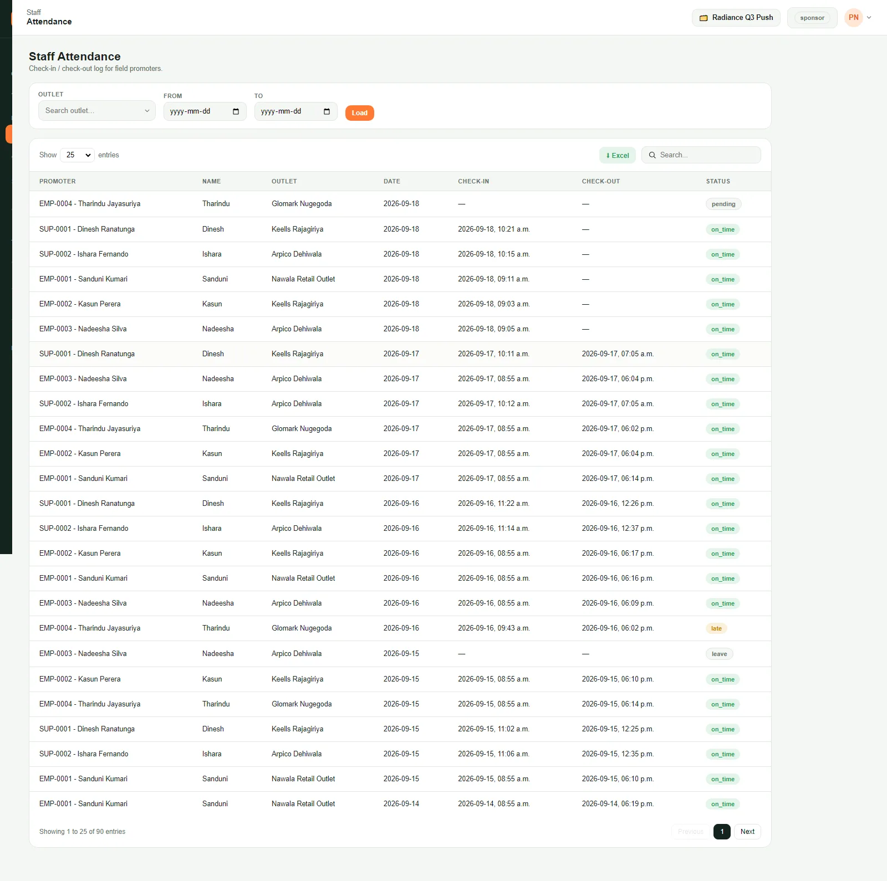
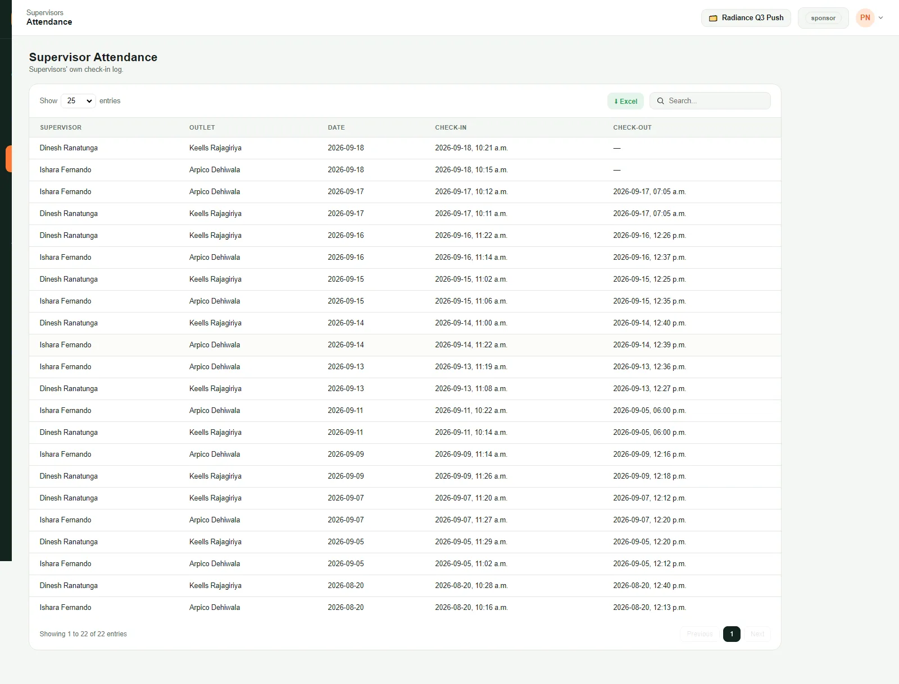
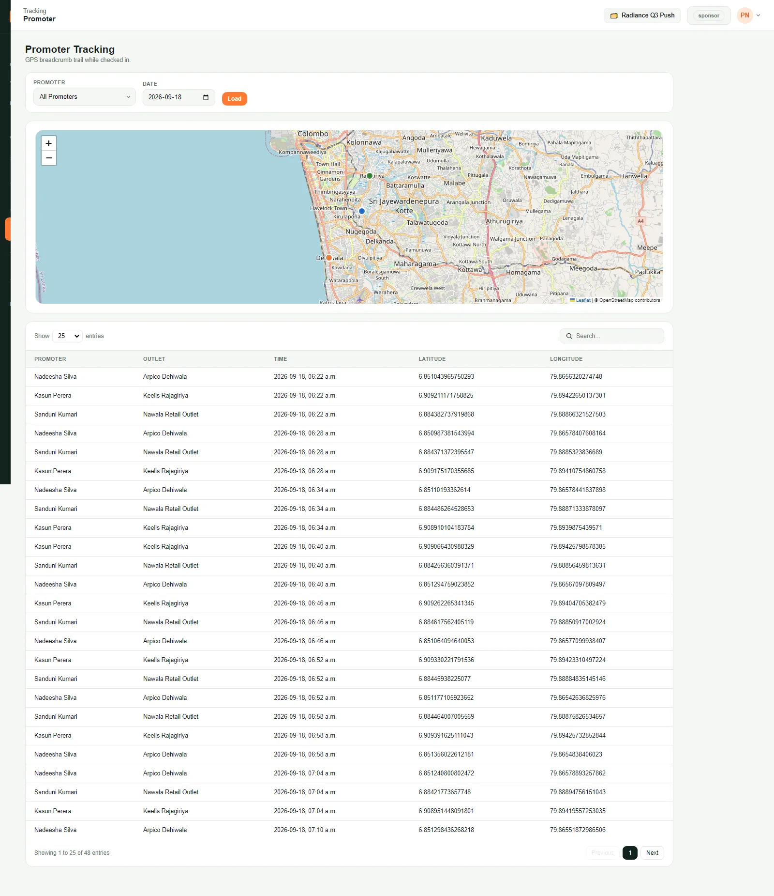

Sponsor guide
Your login is read-only and scoped automatically to your campaign. You cannot change anything, and you never see another brand's data, so there is nothing to set up and nothing to break. Use it to check today's numbers, watch promoters on shift, and pull your own reports without emailing the agency.
01Sign in and read your campaign name
Every time you open the portal
Sign in and read your campaign name
-
Open the portal address in a browser, enter your username and password, and sign in. You land on your Dashboard.
-
Your login is locked to the one campaign you were granted — there is no switcher to operate. The top-right shows its name so you always know which campaign you are looking at.

-
Pin the pages you use most. Hover a menu item and click its star (or click the star next to the page title at the top) and it appears under Favorites at the top of your menu. Open Personalization from your account menu (top-right) to reorder or remove favorites.
Follows you: favorites are saved to your account, so you see the same menu on any computer or browser you sign in from.
02Read the dashboard
Your at-a-glance view of today
Read the dashboard
-
The tiles at the top are today so far: total sales, footfall, how many outlets have a promoter checked in right now, and how many outlets are active today. They update as promoters work.
-
The Seller live locations map shows every promoter currently checked in, with their outlet. It refreshes on its own every few seconds.
-
Top products lists your best sellers for the campaign so far, with units and value. For anything more detailed, use the reports (task 6).
03Watch the live promoter map
To see who is on shift right now
Watch the live promoter map
-
Open Seller Live Locations from the left menu for the full-screen version, with a list of everyone checked in and when. Click a row in the list to highlight that promoter's marker on the map — click again to clear the highlight.

-
A promoter only appears while their app is open and they are checked in. An empty map after hours is normal.
04Check who is on shift
Promoter and supervisor attendance
Check who is on shift
-
Open People → Attendance for the promoter check-in / check-out log: outlet, date, check-in and check-out time, and on-time / late status. Filter by outlet or date range, and export to Excel.

-
Open People → Supervisor Attendance for the same thing for supervisors — their own check-in and check-out at the outlets they visit.

05See where people have been
Historical GPS trails, not the live map
See where people have been
-
Open Tracking → Promoter Tracking (or Supervisor Tracking) to review one person's GPS breadcrumb trail on a chosen date, drawn as a coloured path on a map above a time table. Clicking a table row highlights that exact breadcrumb on the map above. This is history, not the live view from task 3.

06Pull a sales report
By product or by brand, any dates, exportable
Pull a sales report
-
From the left menu, open Reports → Client Reports and choose Overall Outlet and SKU Wise (per product) or Brand Wise (per outlet and brand).
-
Set a From and To date and press Load. Leave the dates blank for the whole campaign.

-
Each row shows units sold and total value; the grand total is at the bottom. The Brand Wise report rolls the same numbers up per outlet and brand.

-
Press the green Excel button to download the table.
07Dig into the sales log
Row-by-row, per outlet and day
Dig into the sales log
-
Open Reports → Client Reports → Overall Outlet and SKU Wise. This is the raw log, one row per product, per outlet, per day, with unit price, start quantity, sold, and a closing Total Sales column (sold quantity × unit price).

-
Filter by Outlet and a date range and press Load, or type in Search. Export with Excel.
08See the outlet checklist results
Scores and photos from supervisors' outlet visits
See the outlet checklist results
-
Open People → Task Results, pick a From and To date and press Load. At the top you get the average score (supervisors rate each promoter 1 to 5: 1 Poor, 2 Needs improvement, 3 Meets standard, 4 Good, 5 Excellent), how many checklists are complete and how many are still incomplete, then the average score by promoter, by outlet and by category.
-
Below that, Answers lists each rating, note and photo by outlet. Photos are thumbnails, click one to enlarge it and see when it was uploaded. Export everything in the date range with Excel; the file has a working link for every photo.